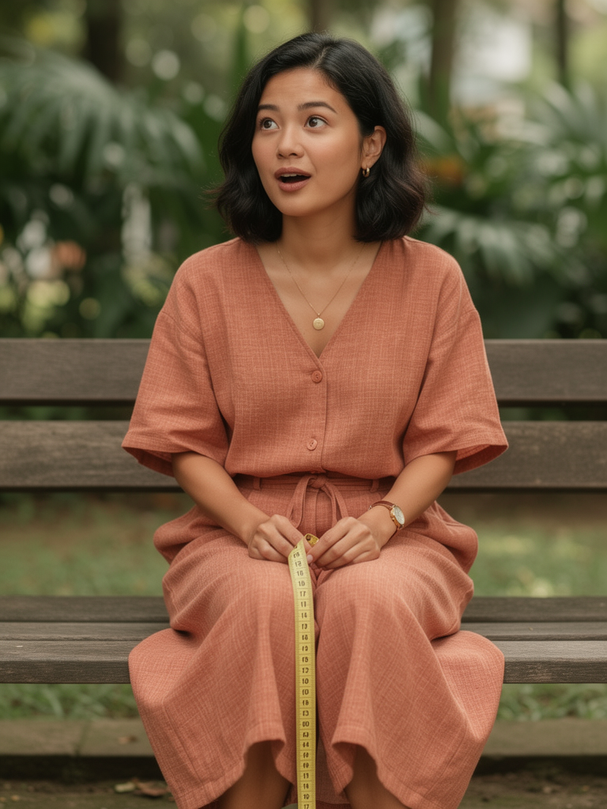
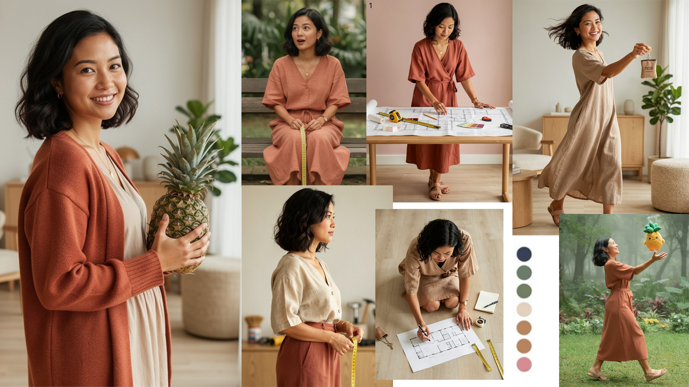
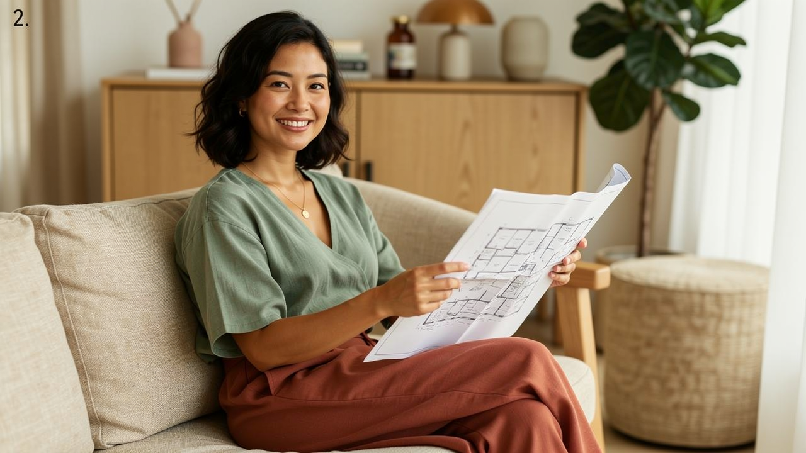
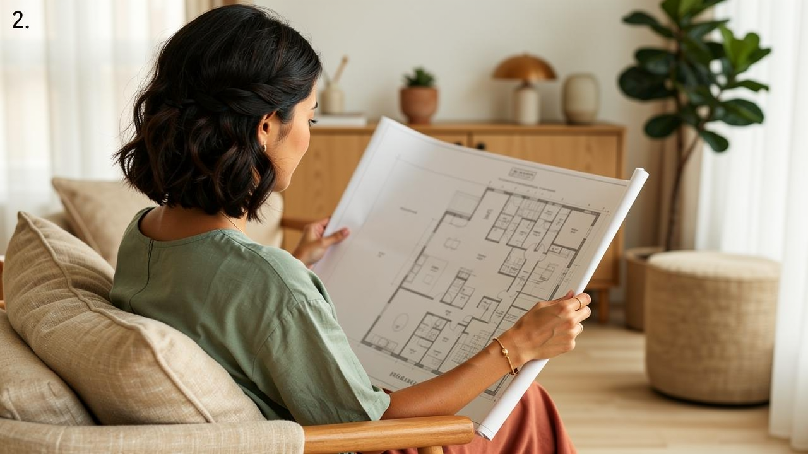
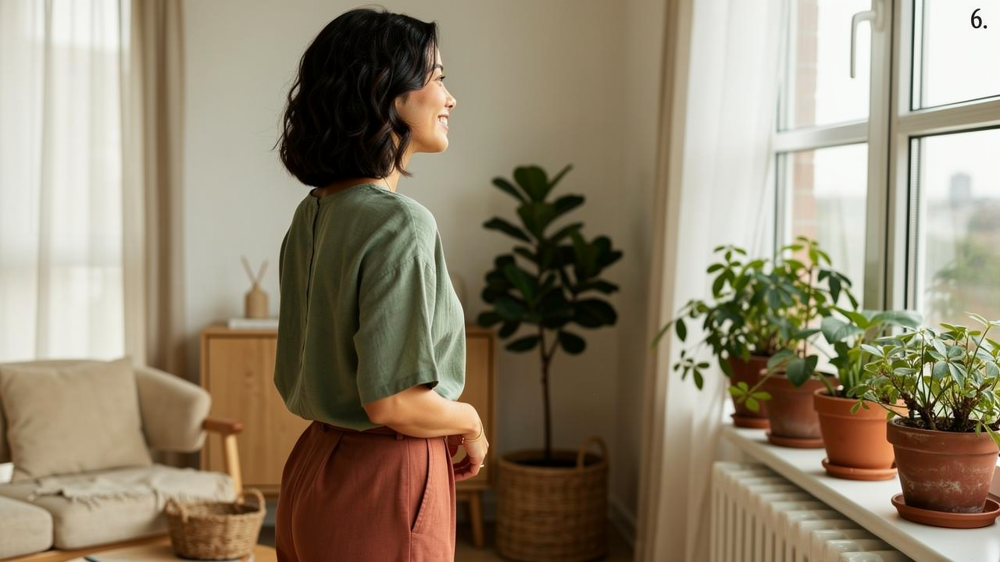

01. Character Ideation
The process began with exploring various character profiles. We generated multiple iterations to define the aesthetic balance between "Husband" and "Wife" personas, focusing on relatability and premium visual fidelity.


02. Character Selection
The Chosen Persona
After evaluating variation #4, we committed to this character. Her "Nest Builder" persona perfectly aligns with the home-improvement and financial educational content intended for the pilot series.
03. World Building & Scenarios
To ensure character consistency across different scenarios, we tested her in varying outfits and environments (Japandi-style living rooms, soft lighting).


04. Narrative & Scripting
The "ABSD" Concept
We scripted a 45-second educational short explaining Additional Buyer's Stamp Duty (ABSD) in Singapore. The character acts as a relatable "BTO home-buyer," breaking down complex taxes into bite-sized, optimistic advice for new homeowners.
05. Technical Pipeline
We translated the script into static keyframes, which were then processed through AI video generation models to create fluid motion while maintaining facial features and environment settings.



(Hover over clips to preview individual scene tests)
06. Final Production
The complete 40-second master file featuring synced audio and seamless transitions.
07. Use Cases & Efficiency
Social Media Ready
Optimized for rapid generation of shorts/reels with consistent characters across infinite scenarios.
Long-Form Content
Scalable to YouTube documentaries or educational series with minimal overhead.
Cost Efficiency
Significantly lower production costs compared to traditional film crews and physical sets.